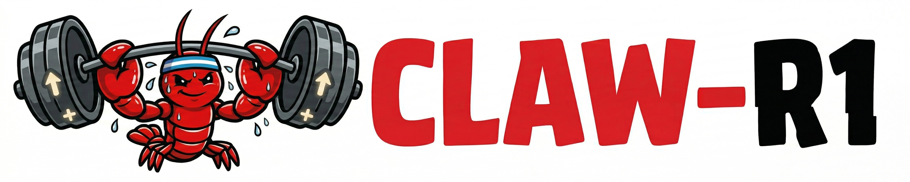
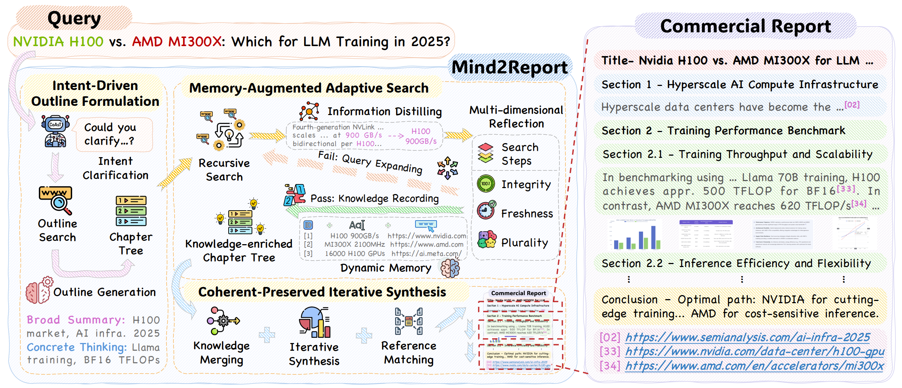
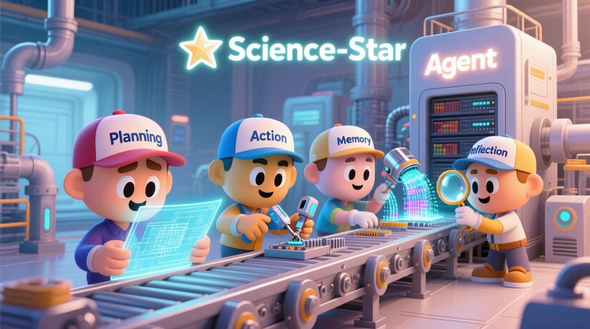
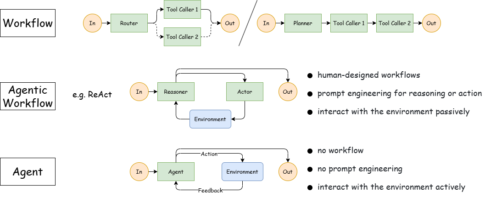

Open Source Projects

TabClaw is an agentic table reasoning framework that empowers LLMs to understand, analyze, and interact with complex tabular data through structured reasoning, tool use, and multi-step decision workflows.

An agentic reinforcement learning framework extending RL training environments for reasoning and tool-using LLM agents.

A cognitive deep research agent for synthesizing expert-level commercial and strategic reports from massive web sources with citation-grounded outputs.

An open-source framework for building scientific AI agents — ReAct engine, tool orchestration, memory & reflection, HLE dataset integration.

A large-model agent training framework supporting reinforcement fine-tuning (GRPO), multi-tool orchestration, long-term memory, and reflective reasoning.